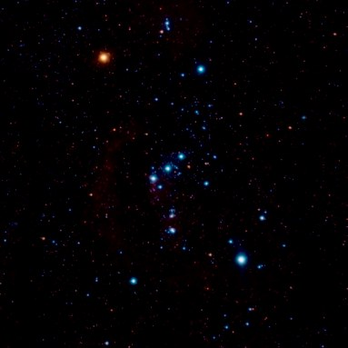
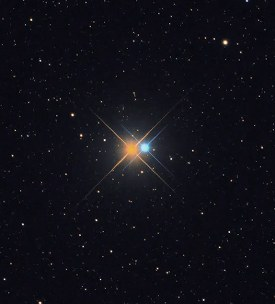

별의 표면 온도와 색
뜨거운 용암은 흘러가면서 온도가 내려가고, 그때 색이 노란색 → 빨간색 → 검은색으로 달라집니다. 밤하늘의 별들도 다양한 색으로 관측됩니다.
이 단원에서 나는
- 별의 표면 온도와 색의 관계를 설명할 수 있다.
도입 용암의 색이 흐르면서 달라지는 까닭은?
용암이 흘러내려 가면서 색이 달라지는 까닭은 무엇일까요?
용암이 흘러내려 가면서 용암의 온도가 달라지기 때문입니다. 물체의 색을 보면 온도를 비교할 수 있습니다. 별도 마찬가지입니다.
개념 1 오리온자리의 두 별 교과서 288쪽 | 그림 7 |
겨울철에 잘 관측되는 오리온자리의 베텔게우스와 리겔은 색이 다릅니다. 적색을 띠는 베텔게우스의 표면 온도는 청백색을 띠는 리겔보다 낮습니다.

별의 색을 관측하면?
별의 표면 온도에 따라 별의 색이 다릅니다. 따라서 별의 색을 관측하여 표면 온도를 비교할 수 있습니다.
별까지의 거리를 몰라도, 망원경으로 색만 확인하면 그 별의 표면이 얼마나 뜨거운지 짐작할 수 있다는 뜻입니다. 오른쪽 아래 시뮬레이션에서 온도를 직접 바꿔 보세요.
개념 2 표면 온도에 따라 색은 어떻게 달라질까? 교과서 289쪽 | 그림 8 |
표면 온도가 매우 높은 별은 청색을 띠고, 표면 온도가 낮아지면서 점차 청백색 → 백색 → 황백색 → 황색 → 주황색 → 적색을 띠게 됩니다.
별의 표면 온도 바꿔 보기
아래 버튼을 누르면 실제 별의 온도로 이동합니다| 그림 8 | 별의 색과 표면 온도
| 색 | 대략적인 표면 온도 | 별의 예 |
|---|---|---|
| 청색 | 30000 K 이상 | 나오스 |
| 청백색 | 10000 ~ 30000 K | 리겔, 스피카 |
| 백색 | 7500 ~ 10000 K | 시리우스, 베가 |
| 황백색 | 6000 ~ 7500 K | 카노푸스, 프로키온 |
| 황색 | 5000 ~ 6000 K | 태양, 카펠라 |
| 주황색 | 3500 ~ 5000 K | 아르크투루스, 알데바란 |
| 적색 | 3500 K 미만 | 베텔게우스, 안타레스 |
예를 들어 황색 별인 태양은 표면 온도가 약 6000 K입니다.

색만 보고도 알 수 있는 것
알비레오 A는 주황색, 알비레오 B는 청백색입니다. 따라서 알비레오 B가 알비레오 A보다 표면 온도가 높습니다.
황색인 태양(약 6000 K)과 비교하면 표면 온도는 알비레오 A → 태양 → 알비레오 B 순으로 높아집니다.
정리 핵심 정리
- 별의 색 : 별의 표면 온도에 따라 별의 색이 달라진다.
- 표면 온도에 따른 별의 색 : 표면 온도가 매우 높은 별은 청색이며, 표면 온도가 낮아질수록 청백색 → 백색 → 황백색 → 황색 → 주황색 → 적색이다.
- 따라서 별의 색을 관측하면 표면 온도를 비교할 수 있다.
확인 이것만은 & 문제로 확인
사고력 태양의 색은 앞으로 어떻게 변할까?
태양은 약 50억 년이 지나면 온도가 훨씬 낮아질 것이라고 한다. 그렇다면 태양의 색은 점차 어떻게 변하게 될지 설명해 보자.
스스로 정리하기
별의 표면 ㅇ ㄷ에 따라 별의 색이 달라진다.